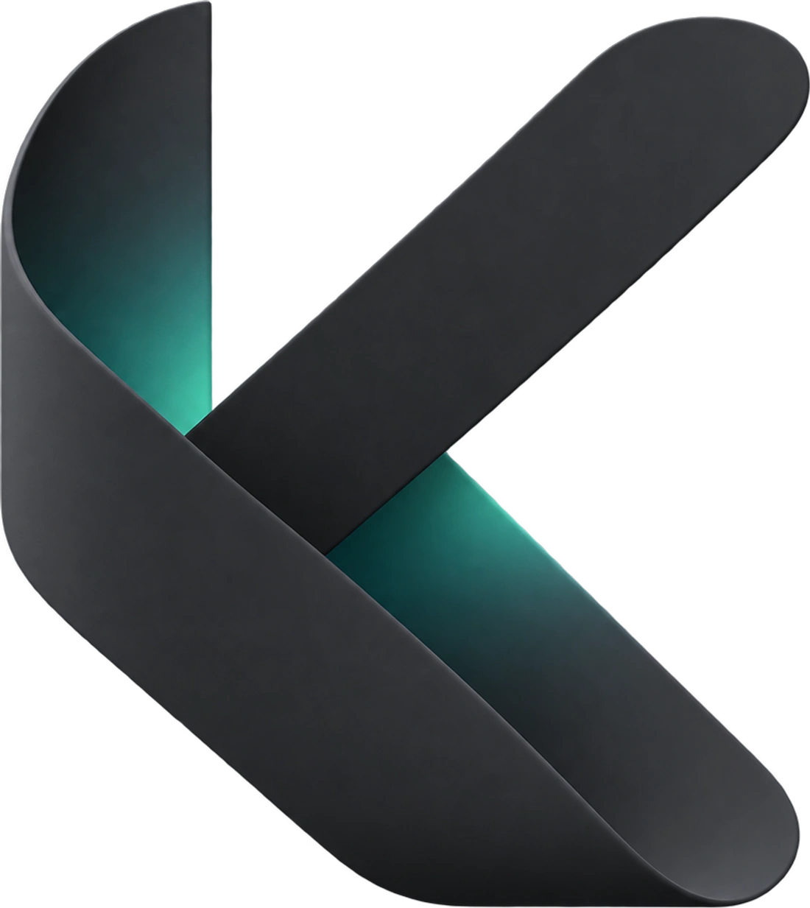

从一张参考图开始
带着画面创作，让构图、角色和风格有据可循。

01 / 展开你的工作
想法、资料、工具与成果，
本来就该在一起。
把切换窗口的时间，留给专注。
按项目整理任务，在对话里推进目标，让文件、工具和预览始终在手边。
02 / 把灵感，接成作品
从参考图到镜头，从镜头到短片。
让素材与提示词在同一条工作流中，
顺着灵感向前。
自动提取尾帧。
把连续性留给工作流。
选一个光线，写下你看到的世界。
把这段提示词带进 Knorvia，接着创作。
清晨，薄雾里的弧形建筑被第一束日光照亮。柔和银绿色，细腻材质，镜头缓慢推进，安静而开阔。
这里是交互示意，不会调用模型。
实际生成能力取决于你连接的服务商。
带着画面创作，让构图、角色和风格有据可循。
通用提示词贯穿镜头，按顺序生成，延续上一个画面。
图片、视频与附加创作流程联动，保留每一步的素材。
03 / 留给你的自由
让工具适应你的工作。
也给下一个想法，留好位置。
保存多个提供商，为对话、图片和视频选择合适的模型。也可以连接自己的本地模型。
个人资料与创作成果统一收好。查看、编辑、整理，也可以交给 Agent 一起完成。
创建有各自角色与上下文的 Bot。单独交流，或组成群聊，让不同擅长的伙伴协作。
看见已保存的记忆，按需要修改或删除。让长期使用积累下来的内容保持清晰。
用 Skill 和插件接入学习、研究与创作方法；用 CLI 与外部工具衔接，让重复工作成为自动化。
属于你的空间
运行 Windows 安装包，或完整解压便携包后启动 Knorvia.exe。在设置中连接自己的模型服务商，然后选择项目，开始第一段对话。
Knorvia 客户端不内置钱包或订阅。在线模型的额度、能力和费用由你连接的服务商决定；本地模型按自己的运行环境使用。
资料、项目和工作记录由本地工作台管理。使用在线模型、插件或联网工具时，请求所需内容会发送到对应的服务。你可以按自己的需要选择连接。
可以。在 GitHub 查看源码、提交问题或参与贡献。项目采用 Apache-2.0 开源许可，第三方依赖遵循各自许可。阅读贡献指南 ↗